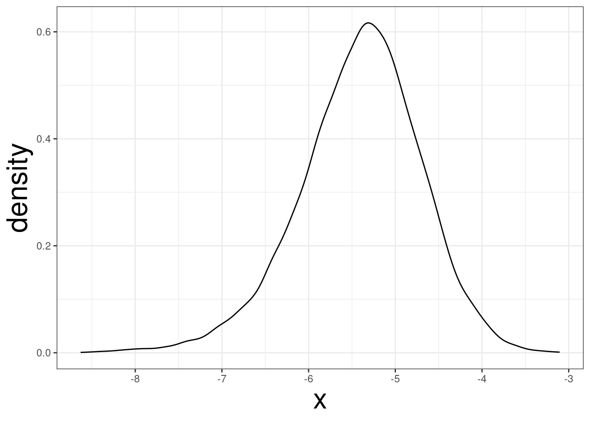

Code
library(tidyverse)
theme_set(theme_bw())
theme_update(axis.title = element_text(size = 24))The Boostrap Method is an approach that can construct the sampling distribution of several estimators, not all estimators, without imposing a mathematical model on the data. The idea is that the sample \(X_1, \ldots, X_n\) is generated from a distribution function called \(F(\theta)\). If the sample is large enough, then the empirical distribution function \(\hat F_n\) should begin to look like the true distribution function \(F\). This implies that the sample contains all the information of \(F\). Therefore, if we resample from our sample, with replacement, we are then sampling from our empirical distribution \(\hat F_n\), which looks really close to the true distribution function \(F\).
R Packages Used
library(tidyverse)
theme_set(theme_bw())
theme_update(axis.title = element_text(size = 24))The empirical distribution function is designed to estimate a random variable’s distribution function. For an observed sample \(\{x_i\}^n_{i=1}\), the empirical distribution function is
\[ \hat F_n(x) = \left\{\begin{array}{cc} 0, & x < x_{(1)} \\ \frac{i}{n},& x_{(i)} \leq x <x_{(i+1)},\ i = 1,\ldots,n-1\\ 1,& x_{(n)}\leq x \end{array} \right. \]
where \(x_{(1)}, \ldots, x_{(n)}\) is the ordered sample. Looking at the Glivenko-Cantelli Theorem, the empirical distribution function converges to the true function as \(n\rightarrow \infty\). For a large enough sample, \(\hat F_n\) will contain the same information as \(F\).
If random variables \(X_1, X_2, \cdots, X_n\) are independent come from the same distribution (\(iid\)), then
\[ \hat F_n (x) \rightarrow F(x) \]
converges uniformly as \(n\rightarrow \infty\), for more information click here.
Accordingly, the sample generated has it’s own distribution function called \(\hat F_n\) where the probability of seeing any value \(x_i\) is \(1/n\). Therefore, if we were to resample \(\{x_i\}^n_{i=1}\), with replacement, it is equivalent to sampling from \(\hat F_n\).
The Bootstrap Method is commonly used to obtain the standard error and or confidence limits of an estimator. By repeatedly sampling from \(\hat F_n\), the sampling distribution of any estimator can be approximated. This is advantageous from standard mathematical models which imposes a distribution on \(F\), which may be completely inaccurate. The only assumption being made is that \(\hat F_n\) is close the true distribution function \(F\).
Let \(\boldsymbol X = (X_1, X_2, \ldots, X_n)\) be a random sample from a distribution \(F\). For an estimator \(T(\cdot)\):
The computed statistics from \(B\) samples are the empirical bootstrap distribution of the estimator, \(T(\boldsymbol X)\). This can be used to compute the standard error, bias, and confidence interval of the estimator \(T(\boldsymbol X)\). The number or replicates needed is open to discussion; however, research has shown \(B=200\) to suffiece. Larger \(B\) may be needed for confidence limit estimation. Another rule of thumb is having \(B=n\); however, this may be unfeasible for extremely large samples or computationally intensive tasks.
The bootstrap-based standard error of an estimator is shown to provide an unbiased estimate of the true standard error. We can compute the standard eror using the following formula:
\[ \hat{se}\left\{T(\boldsymbol X)\right\} = \sqrt{\frac{1}{B-1}\sum^B_{i=1}(T^*_i-\bar T^*)^2} \] where \(\bar T^* = \frac{1}{B}\sum^B_{i=1}T^*_i\).
The bootstrap-based bias estimate can be computed by the following formula:
\[ \widehat{bias}\left\{T(\boldsymbol X)\right\} = \bar T^* - T(X) \]
where \(\bar T^* = \frac{1}{B}\sum^B_{i=1}T^*_i\) is the mean estimate of the bootstrap samples and \(T(X)\) is computed statistic from the data.
The confidence limits of a parameter can be estimated by using the percentiles of the bootstrap replicates. The \((1-\alpha) 100 \%\) bootstrap confidence interval can be represented as:
\[ (T^*_{\alpha/2},\ T^*_{1-\alpha/2}) \] where \(T^*_{\alpha/2}\) with \(\alpha/2\) quantile and \(T^*_{1-\alpha/2}\) quantile of the bootstrap replicates.
Let’s say we randomly sample 5 data points from a Poisson Distribution with a rate of 51:
set.seed(42)
x <- rpois(5, 1.5)
x#> [1] 3 4 1 3 2If we were to use this sample and generate bootstrap estimates, we will obtain inaccurate results. This is because the empirical distribution function is a poor estimate of the true distribution function. One reason being that the \(P(X = 0) = 0.2231\), and our sample does not have any 0 values. Any bootstrap samples produced will never carry that information. This is why a large sample is needed so the sample space can be thoroughly explored.
The examples below illustrate how to compute the bootstrap standard errors and confidence limits in a regression setting.
The mtcars data set contains information on cars from 1974 Motor Trend US Magazine. Fitting a linear regression model between the variable mpg and wt:
lm(mpg ~ wt, mtcars) |> summary()#>
#> Call:
#> lm(formula = mpg ~ wt, data = mtcars)
#>
#> Residuals:
#> Min 1Q Median 3Q Max
#> -4.5432 -2.3647 -0.1252 1.4096 6.8727
#>
#> Coefficients:
#> Estimate Std. Error t value Pr(>|t|)
#> (Intercept) 37.2851 1.8776 19.858 < 2e-16 ***
#> wt -5.3445 0.5591 -9.559 1.29e-10 ***
#> ---
#> Signif. codes: 0 '***' 0.001 '**' 0.01 '*' 0.05 '.' 0.1 ' ' 1
#>
#> Residual standard error: 3.046 on 30 degrees of freedom
#> Multiple R-squared: 0.7528, Adjusted R-squared: 0.7446
#> F-statistic: 91.38 on 1 and 30 DF, p-value: 1.294e-10lm(mpg ~ wt, mtcars) |> confint()#> 2.5 % 97.5 %
#> (Intercept) 33.450500 41.119753
#> wt -6.486308 -4.202635We can see that the estimated model between the 2 variables is \(\widehat{mpg} = 37.285 - 5.345 wt\). The standard error, based on the normal distribution, for the coefficient of wt is 0.5591. The 95% confidence interval for the coefficient of wt is (-6.486, -4.203)2.
To obtain the bootstrap-based standard error and 95% confidence interval, we will need to sample data points in the data set, with replacement. The user created function below will sample data points with replacement3:
resample <- function(df){
dplyr::slice_sample(df, n = nrow(df), replace = T )
}Using the resample, we can get a bootstrap sample:
b1 <- resample(mtcars)
b1Notice that some data points are repeated. We will then construct 10,000 bootstrap samples:
boots <- lapply(1:10000, \(x) resample(mtcars))The object boots is a list, with each element contain a boot replicate data set. Now we will, apply the lm function for each data set in boots.
boots_lm <- lapply(boots, \(x) lm(mpg ~ wt, x))Lastly, we will extract the coefficient value for each replicate4:
boots_wt <- lapply(boots_lm, \(x) coef(x)["wt"]) |> unlist()Let’s visualize the distribution for the coefficient of wt:
data.frame(x = boots_wt) |>
ggplot(aes(x)) +
geom_density()
The plot indicate that the coefficient for wt may not be symmetrical. The standard error can be obtained by applying the sd function to boots_wt:
sd(boots_wt)#> [1] 0.7046252The bootstrap-based standard error is 0.71. This is different from the normal-based standard error of 0.55. The 95% confidence interval of the coefficient of wt cna be obtained by using the quantile function and setting probs = c(0.025, 0.975):
quantile(boots_wt, probs = c(0.025, 0.975))#> 2.5% 97.5%
#> -6.953420 -4.130759The bootstrap-based 95% confidence interval is (-6.973, -4.164), which is slightly wider than the mathematical-based 95% confidence interval: (-6.486, -4.203).